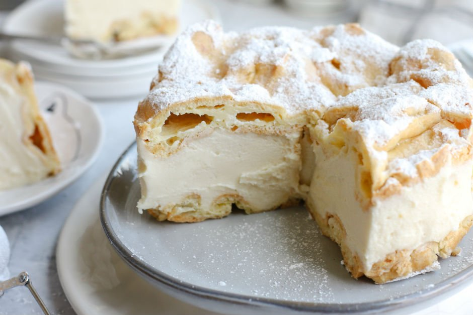

Karpatka
Gereken Malzemeler
Hamuru İçin
- Yarım tereyağı (125 gr)
- 1 su bardağı su
- 1 su bardağı un
- Yarım çay kaşığı tuz
- 4 adet yumurta
- 1 çay kaşığı kabartma tozu
Kreması İçin
- 2 su bardağı süt
- 1 su bardağı toz şeker
- 1. 5 yemek kaşığı un
- 2 yemek kaşığı nişasta
- 1 adet yumurta sarısı
- 2 paket vanilya
- 125 gr tereyağı
Üzeri İçin

Karpatka yapmak için;
- Kremasını hazırlayalım önce; Vanilya ve tereyağı hariç hepsini karıştırıp muhallebi kıvamına
gelince ocaktan alıyoruz.
- Sıcakken vanilyaları ekleyip karıştırıyoruz.
- Tamamen soğuyunca oda sıcaklığında yumuşamış tereyağını ekleyip çırpıyoruz.
- Hamuru için tencereye su, margarin ve tuz konularak kaynayıp erimesini bekliyoruz.
- Unu ilave edip iyice yediriyoruz. Birkaç kez karıştırınca helva kıvamına gelecek.
- Ocaktan alıp tamamen soğumaya bırakıyoruz.
- Soğuyan karışıma kabartma tozunu ve yumurtaları tek tek ilave ederek mikserle çırpıyoruz
(yumurtaların hepsini birden kırmayacağız tek tek karışıma yedirmek önemli).
- Fırını 165 derecede iyice ısıtıyoruz.
- Hamurun yarısını kelepçeli kalıpta ya da normal tepsideyaklaşık35 dakika pişiriyoruz.
- İkinci hamuru da yine aynı şekilde pişiriyoruz.
- Soğuyunca ilk katı kalıba tekrar alıp kremayı döküyoruz. İkinci parçayı da koyup dolapta en az
iki saat bekletiyoruz. Pudra şekeri serpip dilimleyerek servis ediyoruz.